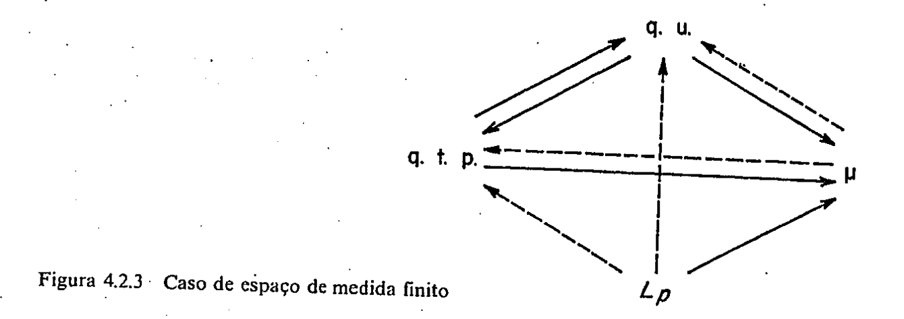

4.2 Espaços \(L_p\)
Seja \(\mathbb{E}\) espaço vetorial real. Uma função real não-negativa \(\left\|\cdot\right\|\) definida sobre \(\mathbb{E}\) é chamada uma norma se, e somente se,
\(\left\|x\right\| = 0 \iff x = 0\);
\(\left\|x+y\right\| \leq \left\|x\right\| + \left\|y\right\|\);
\(\alpha \in \mathbb{R}^1\), \(x \in \mathbb{E}\), \(\left\|\alpha x\right\| = |\alpha|\left\|x\right\|\).
Se em 1) só requeremos que \(\left\|0\right\| = 0\), a função \(\left\|\cdot\right\|\) é chamada seminorma.
Um espaço normado é um espaço vetorial previsto de uma norma \(\left\|\cdot\right\|\). Uma norma induz uma métrica sobre \(\mathbb{E}\) em forma natural; \(d(x, y) = \left\|x-y\right\|\). Quando nos referirmos às propriedades métricas de um espaço normado, estaremos utilizando esta métrica.
Quando um espaço normado é completo, é chamado espaço de Banach.
EXEMPLOS (de espaços de Banach):
\(\mathbb{E} = \mathbb{R}^n\). Se \(x = (x_1, \ldots, x_n)\), definimos \(\left\|x\right\|_1 = \sum\limits_{i=1}^n |x_i|\) e para \(p \geq 1\), \[\left\|x\right\|_p = \left(\sum\limits_{i=1}^n |x_i|^p\right)^{1/p}.\] Definimos também \(\left\|x\right\|_\infty = \sup_{1 \leq i \leq n} \left\{|x_i|\right\}\).
\(X\) um conjunto, \(\mathbb{E} = \{f: X: \to \mathbb{R}^1, f \text{ limitada}\}\), \[\left\|f\right\| = \sup_{x \in X} |f(x)|.\]
\((X, \tau)\) espaço topológico. \(\mathbb{E} = \{f: f: X \to \mathbb{R}^1 \text{ contínua e limitada}\}\), \[\left\|f\right\| = \sup_{x \in X} |f(x)|.\]
Um exemplo muito importante de espaço de Banach, que estudaremos com detalhe, são os chamados espaços \(L_p\). Seja \((\Omega, \mathscr{A}, \mu)\) espaço de medida. Seja \(1 \leq p < \infty\), \(p \in \mathbb{R}^1\). Define-se \(\mathscr{L}_p = \left\{f: f \text{ mensurável}, f: \Omega \to \overline{\mathbb{R}}, \text{e } \int |f|^p < \infty\right\}\).
\(\mathscr{L}_p\) é um espaço vetorial real e \[f \in \mathscr{L}_p \mapsto \left(\int |f|^p\right)^{1/p}\] é uma seminorma em \(\mathscr{L}_p\). Passando ao quociente, isto é, identificando as funções que são iguais q. t. p. (observe que \(f=0\) q. t. p. \(\iff \int |f|^p = 0\)), obtemos um espaço normado que denotaremos por \(L_p\). A norma \(p\) de \(f\) é denotada por \(\left\|f\right\|_p\).
Por definição, \[\mathscr{L}_\infty(\Omega, \mathscr{A}, \mu) = \mathscr{L}_\infty = \left\{f: \mu\left(\left[|f| > a\right]\right) = 0, \text{ para algum } a > 0\right\}.\] Da mesma forma \(\mathscr{L}_\infty\) é um espaço vetorial real e \[f \in \mathscr{L}_\infty \mapsto \inf\left\{a > 0: \mu\left(\left[|f| > a\right]\right) = 0\right\}\] é uma seminorma em \(\mathscr{L}_\infty\), e por passagem ao quociente, obtemos o espaço normado \(L_\infty\). A norma \(\infty\) de \(f\) é denotada por \(\left\|f\right\|_\infty\). Se, em particular, \(\Omega = \mathbb{N}\), \(\mathscr{A} = \mathbb{P}(\mathbb{N})\) e \(\mu\) é a medida da contagem, ou seja, a única medida tal que \(\mu\left(\left\{i\right\}\right) = 1\), para todo \(i \in \mathbb{N}\), obtemos os espaços: \[\ell_p = \left\{\left(x_n\right)_{n \in \mathbb{N}}: x_n \in \mathbb{R}^1 \quad \text{e} \quad \sum\limits_{n=1}^\infty |x_n|^p < \infty\right\}, 1 \leq p < \infty;\] \[\ell_\infty = \left\{\left(x_n\right)_{n \in \mathbb{N}}: x_n \in \mathbb{R}^1 \text{ e } \left\{x_n: n \in \mathbb{N}\right\} \text{ é limitado em } \mathbb{R}^1\right\}.\] Observe que, se \(x = \{x_n\}_{n=1,2,\ldots}\), então \[\left\|x\right\|_p = \left(\sum\limits_{n=1}^\infty |x_n|^p\right)^{1/p}\] e \[\left\|x\right\|_\infty = \sup_{n \geq 1} \left\{|x_n|\right\}.\] Note-se que o espaço de Banach introduzido no exemplo 1 é também um caso particular de espaço \(L_p\), se tomamos \(\Omega = \{1, 2, \ldots, n\}\), e como medida, a da contagem. Vamos provar agora uma série de desigualdades e proposições que em conjunto permitirão verificar que os espaços \(L_p\) são efetivamente espaços de Banach. Daremos também condições necessárias e suficientes para a convergência nesses espaços. Comecemos pela seguinte desigualdade:
PROPOSIÇÃO 4.2.1 (Desigualdade de Young). Seja \(\varphi: [0, +\infty) \text{ contínua, estritamente crescente } \varphi(u) \xrightarrow{u \to +\infty} +\infty, \varphi(0) = 0\). Seja \(\Psi = \varphi^{-1}\). Definamos para todo \(x \geq 0\) \[\Phi(x) = \int_0^x \varphi(u) du\] \[\Psi(x) = \int_0^x \psi(u) du.\] Então para todo \(a, b \in [0, +\infty)\), \[ab \leq \Phi(a) + \Psi(b).\] A igualdade vale se, e somente se, \(b = \varphi(a)\).
Demonstração. Claramente \[\int_0^a \varphi(u) du + \int_0^{\varphi(a)} \psi(v) dv = a\varphi(a).\] Isto é, \[\Phi(a) + \Psi(\varphi(a)) = a\varphi(a).\] De aqui \[\Phi(a) + \Psi(b) = a\varphi(a) + \Psi(b)-\Psi(\varphi(a)).\]
Decorre da desigualdade considerando os casos \(\varphi(a) \leq b\) e \(\varphi(a) > b\) nas figuras

Uma demonstração analítica pode ser encontrada no Exerc. 48.
Para \(p > 1\) se \(q = \frac{p}{p-1}\) temos \(\frac{1}{p} + \frac{1}{q} = 1\).
\(p\) e \(q\) são chamados números conjugados. Se \(p = 1\), o conjugado será \(q = \infty\).
COROLÁRIO 4.2.1. \[p > 1, \quad a \geq 0, \quad b \geq 0\] \[ab \leq \frac{a^p}{p} + \frac{b^q}{q}\] com igualdade, se, e somente se, \(a^p = b^q\).
Demonstração. Então \[\varphi(u) = u^{p-1}.\] \[\Phi(a) = \int_0^a u^{p-1} du = \left.\frac{u^p}{p}\right|_0^a = \frac{a^p}{p}.\] \[\psi(u) = u^{\frac{1}{p-1}}.\] \[\Psi(b) = \int_0^b v^{\frac{1}{q-1}} dv = \left.\frac{v^q}{q}\right|_0^b = \frac{b^q}{q}.\] Pela desigualdade de Young temos \(ab \leq \frac{a^p}{p} + \frac{b^q}{q}\), com igualdade, se, e somente se, \(b = \varphi(a) = a^{p-1}\). Isto é, \[b^{\frac{1}{p-1}} = a\] que é equivalente a \[b^{\frac{q}{p}} = b^q = a^p.\] Sejam \(f\) e \(g\) duas funções mensuráveis sobre \((\Omega, \mathscr{A}, \mu)\)
TEOREMA 4.2.1 (Desigualdade de Hölder para p > 1). Se \(f \in \mathscr{L}_p\) e \(g \in \mathscr{L}_q\), onde \(p > 1\) e \(q = \frac{p}{p-1}\), temos \[\int_\Omega |fg| d\mu \leq \left\|f\right\|_p \left\|g\right\|_q.\] A igualdade vale se, e somente se, existe \(A \geq 0\) e \(B \geq 0\), não simultaneamente nulos, tal que \[A|f|^p = B|g|^q \quad \text{q. t. p. } [\mu]\]
Demonstração. Se \(\left\|f\right\|_p = 0\) ou \(\left\|g\right\|_q = 0\), a desigualdade é trivial. Se não é este o caso, pelo corolário temos \[\frac{|f|}{\left\|f\right\|_p} \frac{|g|}{\left\|g\right\|_q} \leq \frac{1}{p} \frac{|f|^p}{\left\|f\right\|_p^p} + \frac{1}{q} \frac{|g|^q}{\left\|g\right\|_q^q}\] e integrando resulta: \[\int_\Omega \frac{|f||g|}{\left\|f\right\|_p \left\|g\right\|_q} d\mu \leq \frac{1}{p} + \frac{1}{q} = 1.\]
COROLÁRIO 4.2.2. Se \(p = q = 2\) temos \[\int_\Omega |fg| d\mu \leq \left\|f\right\|_2 \left\|g\right\|_2.\] Esta é a chamada desigualdade de Cauchy-Schwarz.
Observações.
A desigualdade de Hölder é válida também para \(p = 1, q = \infty\) (veja o Exerc. 6).
Uma consequência da desigualdade de Hölder é que, se \(f \in \mathscr{L}_p\) e \(g \in \mathscr{L}_q\) com \(\frac{1}{p} + \frac{1}{q} = 1\), o produto \(fg \in \mathscr{L}_1\).
A seguinte proposição prova a parte difícil da verificação, \(L_p\) é um espaço normado.
PROPOSIÇÃO 4.2.2 (Desigualdade de Minkowski).
\(f \in \mathscr{L}_p, g \in \mathscr{L}_p, p \geq 1\) então \(f+g \in \mathscr{L}_p \text{ e } \left\|f+g\right\|_p \leq \left\|f\right\|_p + \left\|g\right\|_p\).
Demonstração. Os casos \(p=1\) e \(p=\infty\) são imediatos. Tomamos portanto \(1 < p < +\infty\). Como \[\left\|f+g\right\|^p \leq 2^p \left(\sup\left\{|f|, |g|\right\}\right)^p =\] \[= 2^p \sup\left\{|f|^p, |g|^p\right\} \leq\] \[\leq 2^p\left(|f|^p + |g|^p\right)\] resulta que \(f+g \in \mathscr{L}_p\).
Temos também que \[\int |f+g|^p \leq \int |f+g|^{p-1}|f| + \int |f+g|^{p-1}|g|.\] Agora \[\left\||f+g|^{p-1}\right\|_q = \left(\int \left(|f+g|^{p-1}\right)^q\right)^{1/q} =\] \[= \left(\int |f+g|^{p}\right)^{1/q} = \left\|f+g\right\|_p^{p/q}.\] Usando a desigualdade de Hölder resulta que: \[\int |f+g|^{p-1}|f| \leq \left\|f\right\|_p \left\||f+g|^{p-1}\right\|_q;\] \[\int |f+g|^{p-1}|g| \leq \left\|g\right\|_p \left\||f+g|^{p-1}\right\|_q.\] Temos portanto \[\left\|f+g\right\|_p^p \leq \left(\left\|f\right\|_p + \left\|g\right\|_p\right) \left\|f+g\right\|_p^{p/q}.\] Como \(p-\frac{p}{q}=1\), temos a desigualdade desejada.
COROLÁRIO 4.2.3. Os espaços \(L_p, 1 \leq p \leq \infty\) são espaços normados.
Demonstração. Veja o Exerc. 7.
PROPOSIÇÃO 4.2.3 (Desigualdade de Markov). Suponhamos que \(g: \mathbb{R}^1 \to \mathbb{R}^1\) seja uma função par, \(\geq 0\), \(g(x) > 0\) se \(x > 0\), e não-decrescente em \([0, +\infty)\). Se \(f\) é uma função mensurável finita definida sobre \((\Omega, \mathscr{A}, \mu)\), então para todo \(a > 0\). \[\mu([|f| \geq a]) \leq \frac{\int_\Omega (g \circ f) d\mu}{g(a)}\]
Demonstração. \(\frac{g(x)}{g(a)} \geq 1\), se \(|x| \geq a\). Então \[\mu([|f| \geq a]) = \int_\Omega I_{[|x| \geq a]} (g \circ f) d\mu\] \[= \int_\Omega \frac{I_{[|x| \geq a]} (g \circ f)}{g(a)} d\mu \leq \frac{\int_\Omega (g \circ f) d\mu}{g(a)}.\]
A Desigualdade de Markov só será usada neste livro no caso \(g(x) = |x|^p, p \geq 1\).
COROLÁRIO 4.2.4. Se \(\{f_n\}_{n=1,2,\ldots}\) é fundamental em \(L_p, 1 \leq p \leq \infty\), então \(\{f_n\}_{n=1,2,\ldots}\) é fundamental em medida.
Demonstração. O caso \(p = \infty\) é imediato. Para o caso \(1 \leq p < \infty\) é suficiente usar a desigualdade \[\mu([|f_n-f_m| \geq \varepsilon]) \leq \frac{\int_\Omega |f_n-f_m|^p d\mu}{\varepsilon^p}.\]
PROPOSIÇÃO 4.2.4. Se \(1 \leq p \leq \infty\), \(L_p\) é completo.
Demonstração. Consideremos primeiro o caso \(p = \infty\). Seja \(\{f_n\}_{n=1,2,\ldots}\) uma sucessão fundamental e \(0 < \varepsilon_{n,m} \xrightarrow[n,m \to \infty]{} 0\).
Se \(A_{n,m} = \left[\left. |f_n-f_m| > \left\|f_n-f_m\right\|_\infty + \varepsilon_{n,m}\right.\right]\), temos \(\mu(A_{n,m}) = 0\). Se \(A = \bigcup\limits_{n,m} A_{n,m}\), resulta que \(\mu(A) = 0\) e \(f_n\) converge uniformemente sobre \(A^c\). Definimos então \[f(\omega) = \begin{cases} \lim\limits_n f_n(\omega) & \omega \in A^c \\ 0 & \omega \in A \end{cases}\] é claramente \(\left\|f_n-f\right\|_\infty \to 0\).
Seja agora \(1 \leq p < \infty\); e \(\{f_n\}_{n=1,2,\ldots}\) uma sequência fundamental em \(L_p\). Pela desigualdade de Markov é fundamental em medida. Então \(f\) é mensurável, tal que \(f_n \xrightarrow[\mu]{} f\) (Cor. 3.6) e pelo Cor. 3.5 existe uma subsequessão \(\{f_{n_k}\}_{k=1,2,\ldots}\), tal que \(f_{n_k} \to f\) q. t. p. Observemos que, como \(f_n\) é fundamental em \(L_p\) e uniformemente limitada em \(L_p\), então existe \(M > 0\), tal que \(\left\|f_n\right\|_p < M\), para todo \(n\).
Como \(f_{n_k} \to f\) q. t. p., temos também \(|f_{n_k}|^p \to |f|^p\) q. t. p. e então, por Fatou-Lebesgue, \[\int |f|^p \leq \liminf \int |f_{n_k}|^p \leq M^p < \infty,\] ou seja, \(f \in \mathscr{L}_p\).
Então \(f_n-f_{n_k} \xrightarrow[k \to \infty]{\text{q.t.p.}} f_n-f \implies |f_n-f_{n_k}|^p \xrightarrow[k \to \infty]{} |f_n-f|^p\) q. t. p. para todo \(n\). Pelo Teorema de Fatou-Lebesgue, item b, como \[0 \leq |f_n-f_{n_k}|^p, \quad \int |f_n-f|^p \leq \lim_{k} \inf \int |f_n-f_{n_k}|^p.\] Mas do fato de \(\{f_n\}\) ser fundamental em \(L_p\), decorre que \[\lim_{n} \lim_{k} \inf \int |f_n-f_{n_k}|^p = 0.\] Então \[\int |f_n-f|^p \to 0, \quad \text{ou seja, } \left\|f_n-f\right\|_p \xrightarrow[n \to \infty] 0.\]
PROPOSIÇÃO 4.2.5. \(f_n \in L_p\), \(f_n\) converge uniformemente sobre \(\Omega\) a \(f\), \(\mu(\Omega) < \infty\). Então \[f \in L_p \quad \text{e} \quad f_n \xrightarrow{L_p} f. \quad (1 \leq p \leq \infty).\]
Demonstração. Dado \(\varepsilon > 0\) \(\exists n_0\), tal que \(\forall n \geq n_0\) \(|f_n-f| \leq \varepsilon \implies |f| \leq |f_{n_0}| + \varepsilon \implies f \in L_p\) \[\left(\int |f_n-f|^p\right)^{1/p} \leq (\varepsilon^p \mu(\Omega))^{1/p} = \varepsilon\mu(\Omega)^{1/p}\] e, portanto, \(f_n \xrightarrow{L_p} f\).
Nota. Se \(\mu(\Omega) = \infty\) o resultado da Prop. 4.2.5 poderia ser falso (veja o Exerc. 8).
PROPOSIÇÃO 4.2.6. \(f_n \in L_p, f_n \xrightarrow[\mu]{\text{q.t.p.}} f, |f_n| \leq g \in L_p \implies f \in L_p \text{ e } f_n \xrightarrow{L_p} f. (1 \leq p < \infty).\)
Nota. (q.t.p. está indicando que a convergência pode ser em q.t.p. ou em medida).
Demonstração. Como \(|f_n| \leq g \implies |f| \leq g \implies f \in L_p\) \[\left\{\begin{matrix} f_n-f \xrightarrow[\mu]{\text{q.t.p.}} 0 \\ |f_n-f|^p \leq 2^p g^p \in L_1 \end{matrix}\right\} \implies \int |f_n-f|^p \to 0.\] A implicação é válida pelo Teorema da Convergência Dominada. A condição de dominação por uma função \(g \in L_p\) não pode ser dispensada como mostra o exemplo contido no Exerc. 9.
Vamos provar agora um teorema que inclui como casos particulares as duas proposições anteriores. Este teorema é devido a Vitali e dá condições necessárias e suficientes para convergência em \(L_p\).
DEFINIÇÃO 4.2.1. Uma família de funções \(\mathscr{F}\) é dita uniformemente absolutamente contínua com respeito a \(\mu\) se, e somente se, para todo \(\varepsilon > 0\) existe \(\delta > 0\), tal que \(\mu(A) < \delta, A \in \mathscr{A} \implies \int_A |f| < \varepsilon\), para todo \(f \in \mathscr{F}\).
\(\mathscr{F}\) é dita equicontínua superiormente ao vazio se, e somente se, para toda sucessão \(\{C_k\}\) de elementos de \(\mathscr{A}\) decrescente ao vazio, e para todo \(\varepsilon > 0\), existe \(k_0\), tal que \(k \geq k_0 \implies \int_{C_k} |f| < \varepsilon\), para todo \(f \in \mathscr{F}\).
TEOREMA 4.2.2 (Vitali). Seja \(\{f_n\}\) uma sequência de funções de \(L_p\) e \(f \in L_p, 1 \leq p < \infty\). Então \(f_n \to f\) em \(L_p\), se e somente se,
\(f_n \xrightarrow[\mu]{} f\);
\(\mathscr{F} = \{|f_n|^p: n \in \mathbb{N}\}\) é uniformemente absolutamente contínua e equicontínua superiormente ao vazio.
Demonstração. Suponhamos que \(f_n \to f\) em \(L_p\). Então \(f_n \xrightarrow[\mu]{} f\), pela Desigualdade de Markov.
Para mostrar que \(\mathscr{F}\) é uniformemente absolutamente contínua, observe que \[\int_A |f_n|^p = \int_A |f_n-f+f|^p \leq 2^p \left\{\int_A |f_n-f|^p + \int_A |f|^p\right\},\] onde a desigualdade acima decorre do fato de \(x \mapsto |x|^p\) ser uma função convexa.
Na expressão entre chaves, a 1ª parcela é menor que \(\int_\Omega |f_n-f|^p\) e então pode ser feita menor que \(\varepsilon/2^p\), para todo \(n\) a partir de um \(n_0\) suficientemente grande, e o mesmo ocorre para a 2ª parcela se tomarmos \(\mu(A) < \delta_0\), para um \(\delta_0 > 0\) suficientemente pequeno (Cor. 4.1.2 da Prop. 4.1.6). Usando este mesmo corolário para as \(f_i, 1 \leq i \leq n_0-1\) escolhemos \(\delta_1, \ldots, \delta_{n_0-1} > 0\), tais que \[\mu(A) < \delta_i \implies \int_A |f_j|^p < \varepsilon.\]
Então \(\delta = \min \left\{\delta_0, \delta_1, \ldots, \delta_{n_0-1}\right\}\) satisfaz as exigências da definição. A prova de que \(\mathscr{F}\) é equicontínua superiormente ao vazio, é análoga.
Seja \(A = \bigcup\limits_{n=1}^\infty \left[f_n \neq 0\right]\). Então \(A\) é uma união enumerável de conjuntos de medida finita porque, para todo \(\varepsilon > 0\), \[\mu\left(\left[f_n \geq \varepsilon\right]\right) \leq \frac{\int |f_n|^p}{\varepsilon^p} < \infty\] e \[\left[f_n \neq 0\right] = \bigcup\limits_{j=1}^\infty \left[f_n \geq 1/j\right].\]
Seja \(\{B_k\}\) uma sucessão crescente, tal que \(B_k \uparrow A\), onde \(\mu(B_k) < \infty\), e seja \(C_k = A-B_k\), para todo \(k\). Então \(\{C_k\} \downarrow \varnothing\). Vamos mostrar que \(\{f_n\}\) é fundamental em \(L_p\).
\[\int |f_m-f_n|^p = \int_A |f_m-f_n|^p = \int_{B_k} |f_m-f_n|^p + \int_{C_k} |f_m-f_n|^p \leq\] \[\leq \int_{B_k \cap A_{m,n}^c} |f_m-f_n|^p + \int_{A_{m,n}} |f_m-f_n|^p + \int_{C_k} |f_m-f_n|^p,\] onde \(A_{m,n} = \left[\left. |f_m-f_n| \geq \varepsilon \right.\right]\) (o valor de \(\varepsilon\) será especificado posteriormente).
Então \[\int |f_m-f_n|^p \leq \varepsilon^p \mu(B_k)\] \[+ 2^{p-1} \left\{\int_{A_{m,n} \cap C_k} |f_m|^p + \int_{A_{m,n} \cap C_k} |f_n|^p\right\} + 2^{p-1} \left\{\int_{C_k} |f_m|^p + \int_{C_k} |f_n|^p\right\},\]
usando a convexidade da função \(x \mapsto |x|^p\). Porém na expressão acima para um \(\delta > 0\) dado, podemos fazer com que cada uma das 3 parcelas seja \(< \delta/3\). Senão vejamos. Existe \(k\) tal que \[\int_{C_k} |f_n|^p < \frac{\delta}{2^{p-1}},\] para todo \(n\), pela equicontinuidade superior ao vazio. Fixado este \(k\), tomemos \(\varepsilon > 0\), tal que \(\varepsilon^p \cdot \mu(B_k) < \delta/3\).
Pela uniforme absoluta continuidade, existe \(\alpha > 0\), tal que \[\mu(A) < \alpha \implies \int_A |f_n|^p < \frac{\delta}{2^{p-1}}\] para todo \(n\) e como \(\{f_n\}\) é fundamental em medida, existe \(n_0\) tal que \[m, n \geq n_0 \implies \mu([|f_n-f_m| \geq \varepsilon]) < \alpha.\] Com este procedimento, provamos que para o citado \(n_0\), \[m, n \geq n_0 \implies \int |f_m-f_n|^p < \delta.\] Como \(L_p\) é completo, existe \(g \in L_p\), tal que \(f_n \to g\) em \(L_p\). Então, pela 1ª parte, \(f_n \xrightarrow[\mu]{} g\), e como \(f_n \xrightarrow[\mu]{} f\) em medida resulta \(f=g\) em q. t. p.
Nota. Em espaços de probabilidade se \(\mathscr{F}\) é uniformemente absolutamente contínua, então \(\mathscr{F}\) é equicontínua superiormente ao vazio. (Veja o Exerc. 11).
PROPOSIÇÃO 4.2.7. Seja \(f \in L_p, p > 0\). Então \[\lim_{q \to \infty} \left\|f\right\|_q = \left\|f\right\|_\infty.\]
Demonstração. Podemos supor que \(\left\|f\right\|_p > 0\). Caso contrário, a igualdade é trivial. Vamos mostrar inicialmente que \(\limsup \left\|f\right\|_q \leq \left\|f\right\|_\infty\).
Podemos supor que \(0 < \left\|f\right\|_\infty < \infty\), pois caso contrário a desigualdade é trivial. Se \(q \geq p\), temos \[|f|^q = |f|^p |f|^{q-p} \leq |f|^p \left\|f\right\|_\infty^{q-p} \quad \text{q. t. p.}\] o que implica que \[\int |f|^q \leq \left\|f\right\|_\infty^{q-p} \int |f|^p\] e extraindo a raiz \(q\)-ésima, \[\left\|f\right\|_q \leq \left\|f\right\|_\infty^{1-p/q} \left\|f\right\|_p^{p/q}.\] Então, quando \(q \to \infty\), obtemos \[\limsup \left\|f\right\|_q \leq \left\|f\right\|_\infty.\] Mostremos agora que \(\liminf \left\|f\right\|_q \geq \left\|f\right\|_\infty\).
Se \(\left\|f\right\|_\infty = 0\), então \(\left\|f\right\|_q = 0\), para todo \(q\). Caso contrário existe \(c\) tal que \(\left\|f\right\|_\infty > c > 0\) e então \[\int |f|^q \geq \int_{[|f|>c]} |f|^q \geq c^q \cdot \mu\left(\left[|f| > c\right]\right)\] ou extraindo a raiz \(q\)-ésima, \[\left\|f\right\|_q \geq c\left(\mu\left(\left[|f| > c\right]\right)\right)^{1/q}.\] Como \(\mu\left(\left[|f| > c\right]\right) < \infty\) porque \(f \in L_p\) e \(\mu\left(\left[|f| > c\right]\right) > 0\) porque \(\left\|f\right\|_\infty > c\), tomando o limite quando \(q \to \infty\), obtemos \[\liminf \left\|f\right\|_q \geq c.\] Mas \(c\) é um número arbitrário menor que \(\left\|f\right\|_\infty\) e então \[\liminf \left\|f\right\|_q \geq \left\|f\right\|_\infty, \quad \text{c.q.d.}\]
PROPOSIÇÃO 4.2.8. Sejam \(\mathscr{B}\) uma álgebra contida em \(\mathscr{A}\), tal que \(\sigma(\mathscr{B}) = \mathscr{A}\) e \[\mathbb{H} = \left\{h: \Omega \to \mathbb{R}^1: h \text{ da forma } \sum\limits_{i=1}^n a_i I_{B_i} \text{ onde } a_i \in \mathbb{R}^1, B_i \in \mathscr{B} \text{ disjuntos e } \mu(B_i) < \infty, 1 \leq i \leq n\right\}.\] Então \(\mathbb{H}\) é denso em \(L_p, 1 \leq p < \infty\).
Demonstração. Seja \(\mathbb{H}' = \left\{h: \Omega \to \mathbb{R}^1: h \text{ da forma } \sum\limits_{i=1}^n a_i I_{A_i}, \text{ onde } a_i \in \mathbb{R}^1, A_i \in \mathscr{A} \text{ disjuntos e } \mu(A_i) < \infty, 1 \leq i \leq n\right\}\).
Mostremos inicialmente que \(\mathbb{H}'\) é denso em \(L_p\). Seja \(f \in L_p\) (podemos tomar \(f \geq 0\), sem perda de generalidade) e \(\{f_n\}\) uma sequência de funções simples, tal que \(0 \leq f_n \uparrow f\). Como \(|f_n-f|^p \leq 2^p |f|^p\) que é uma função integrável e \(|f_n-f|^p \to 0\), pelo Teorema de Fatou-Lebesgue, \(\left\|f_n-f\right\|_p \to 0\), quando \(n \to \infty\). Por outro lado \(\mathbb{H}\) é denso em \(\mathbb{H}'\) porque se \(\tilde{f} = \sum\limits_{i=1}^n a_i I_{A_i}\), com \(A_i \in \mathscr{A}\) e \(\mu(A_i) < \infty\), pelo teorema de aproximação, dado \(\varepsilon > 0\), existe \(B_j \in \mathscr{B}\), tal que \[\mu\left(A_j \ ?^* \ B_j\right) < \frac{1}{n} \left(\frac{\varepsilon}{\sum\limits_{i=1}^n |a_i|}\right)^p,\] \(1 \leq j \leq n\) e então \(\overline{f} = \sum\limits_{i=1}^n a_i I_{B_i}\) é tal que \(\left\|\tilde{f}-\overline{f}\right\|_p < \varepsilon\). [Para exibir \(\overline{f}\) explicitamente como um elemento de \(\mathbb{H}\), deveríamos escolher \(\{\tilde{B}_j\}_{j=1 \leq m}\) e \(\tilde{a}_j \in \mathbb{R}^1\), \(\tilde{B}_j \in \mathscr{B}\) e disjuntos, tais que \(\overline{f} = \sum\limits_{j=1}^m \tilde{a}_j I_{\tilde{B}_j}\) (representação padrão de \(\overline{f}\)). *operação não identificada.
Antes de começar com as aplicações vamos apresentar vários diagramas nos quais indicamos as relações entre os distintos tipos de convergência. A notação será a seguinte:
q.u. – convergência quase uniforme;
r.t.p. – convergência em quase todo ponto;
\(\mu\) – convergência em medida;
\(L_p\) – convergência em \(L_p\).
A Fig. 4.2.2 corresponde ao caso de um espaço de medida arbitrário. Uma seta feita com linha cheia indica que a implicação no sentido da seta é verdadeira. Se a seta é feita com uma linha pontilhada significa que existe uma subsequência que converge da forma indicada. A ausência de seta indica que a implicação é falsa em geral. Nesse caso o leitor deve construir um contra-exemplo. (A maior parte dos contra-exemplos estão incluídos no texto ou nos exercícios).

A Fig. 4.2.3 corresponde ao caso de um espaço de medida finito.
Finalmente na Fig. 4.2.4 é considerado o caso no qual a sequência convergente no modo indicado \(\{f_n\}_{n=1,2,\ldots}\), tem a propriedade \(|f_n| \leq g\) em q.t.p. onde \(g\) é uma função fixa pertencendo a \(L_p\).